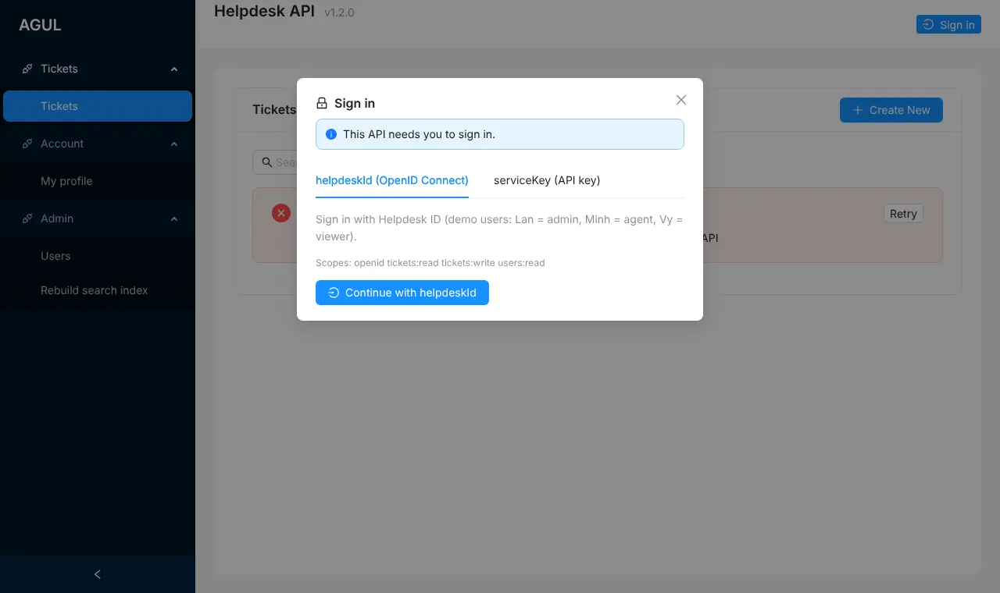

Spec in. → Working UI out.
AGUL reads your OpenAPI or Swagger spec and renders a complete React app: tables, forms, actions and streaming chat, with sign-in and roles taken from the spec's own security rules. No generated code to maintain.
"/tickets": { get, post }, "/tickets/{id}": { get, patch, delete: { "x-agul-roles": ["admin"] } }, "Ticket": { "id": { "readOnly": true }, "status": { "enum": ["open", "pending", "closed"] }, "requester": { "format": "email" } }

Thirty seconds, five specs
Each scene puts a real excerpt of a demo spec next to the screen AGUL renders from it.
What each line of the spec becomes
The Helpdesk spec above, line by line. Change the spec and the UI follows.
GET /tickets→A list page with search and paginationPOST /tickets→A "Create new" button and its formGET · PATCH /tickets/{id}→View and Edit pagesstatus: enum→A status filter and a select fieldrequester: format email→An email field that validatesid: readOnly→Shown, but never in a formdelete + x-agul-roles: admin→Delete appears for admins onlysecuritySchemes→A sign-in dialog with one tab per schemeGET /health + x-agul-view: hidden→No page at all
Five more specs, five more screens
All screenshots come from the demo on this site, built from the specs in the repository.
"/pet": { post, put }, "/pet/findByStatus": { get }, "/pet/{petId}": { get, post, delete }, "/pet/{petId}/uploadImage": { post }

"/chat": { "post": { "requestBody": { "message": "string", "history": [ role, content ], "session_id": "string" }, "responses": { "200": "text/event-stream" } } }

"/readings/draw": { "post": { "requestBody": { "question": "string", "spread": { "enum": ["one-card", "three-card", "celtic-cross"] }, "allow_reversed": "boolean" } } }

"securitySchemes": { "helpdeskId": { "type": "openIdConnect" }, "serviceKey": { "type": "apiKey" } }, "/tickets": { "post": { "security": [{ "helpdeskId": ["tickets:write"] }] } }

1,146 operations across core, apps, batch, networking, rbac, storage… no AGUL annotations

Measured on 19 real public APIs
Stripe, GitHub, Kubernetes, Jira, Twilio, NetBox and more. Method and full table in real-world coverage.
How each page is decided
Three layers, highest priority first. The rule-based layout renders at once; a provider can refine it.
x-agul-view, x-agul-chat, x-agul-roles. Never overridden.Works where your agents and apps already are
The renderer is one React component. These are the ways to reach it today and next.
React
@aikitstudio/agul-react: mount it at the root or under a route.MCP server
@aikitstudio/agul-mcp: coding agents turn a spec into routes, menu and an embed snippet.MCP Apps
The rendered UI inside chat clients that support MCP Apps.AI SDK, CopilotKit, assistant-ui
Examples that show AGUL pages as tool results in agent chats.One component
Point it at a spec. Mount it at the root, or inside your own router under a splat route.
import { AGULRenderer } from '@aikitstudio/agul-react'; export default function Admin() { return ( <AGULRenderer specUrl="/openapi.json" auth={{ oauth: { clientId: 'admin-ui' } }} /> ); } // inside an existing app: <Route path="/admin/*" element={<AGULRenderer spec={spec} />} />
Tune it in the spec
Spec extensions win over everything else.
"/admin/reindex": { "post": { "x-agul-roles": ["admin"], "x-agul-view": "action" } }, "/chat": { "post": { "x-agul-view": "chat", "x-agul-chat": { "messageField": "message" } } }
Try it in your browser
The sample APIs run in your browser (a service worker answers their requests), so nothing leaves your machine.
Helpdesk (secured) →
OpenID Connect sign-in with PKCE. Sign in as Lan (admin), Minh (agent) or Vy (viewer) and watch the UI change.Tarot chat →
CRUD, an action with a nested result, and a streaming chat in one spec.Swagger Petstore →
The classic, against the public Petstore API (results depend on its uptime).Plugins + wizard →
Custom field widgets and a multi-step form from schema extensions.Or paste any spec URL into the demo's toolbar (the API must allow cross-origin calls; the Cloudflare deployment adds a proxy).
Where it fits
An honest comparison with tools you might already use.
| UI comes from | Good at | Pick AGUL when | |
|---|---|---|---|
| API Platform Admin | Hydra / OpenAPI schema, on react-admin | Mature component ecosystem | Your specs are messy real-world ones, or you need actions and chat too |
| react-admin / Refine guessers | Data the API returns | Scaffolding code to edit | You want no generated code to maintain |
| Retool / ToolJet / Appsmith | A person building screens | Visual builders, many connectors | The spec should be the source of truth and the UI embeds in your app |
| Generative UI (CopilotKit, A2UI…) | An LLM, per conversation turn | Free-form, novel UI | You need predictable, complete CRUD at one LLM call per spec, or none |